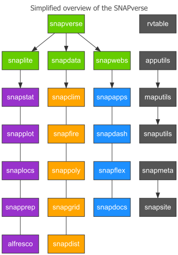

SNAPverse R Packages
The SNAPverse is a collection of R packages that work in tandem in the context of data sets and statistical analysis workflows pertaining to the Scenarios Network for Alaska and Arctic Planning at the University of Alaska Fairbanks. Packages are broken out by sector. Sector packages make it easy to install and load multiple packages from different sectors of the SNAPverse. The different sectors include functions, data sets, web applications and interactive documents, and satellite packages that are outside the core of the verse. Below are links to all SNAPverse member packages, followed by a simplified diagram of the verse.
Sector packages
Sector packages are convenient for loading several R packages at once.
The primary sector package is snapverse. It does not load every package in the SNAPverse, but it does load all packages from the functions, data, and web apps and docs sectors of the verse. snaplite loads only functions packages. snapdata loads data packages. snapwebs loads packages containing collections of SNAP Shiny apps, dashboards and other interactive documents.
Analysis
Analyze and graph data from the SNAPverse with functions sector packages.
The package of most use and interest to a general audience working with SNAP data is snapfuns. The other packages, snapprep and alfresco cater to internal use and do not contain functions useful for analyzing and graphing data sets from SNAPverse data packages. That is specifically what snapfuns exists for. Users other than the author are safe to ignore the other packages.
Curated data sets
Data sector packages offer curated data sets from the SNAPverse ready for exploration.
These data packages offer a range of data sets including spatially explicit maps, vector maps (spatial polygons data frames), climate data sets, historical observed wildfire data and projected ALFRESCO wildfire simulation model output, and much more. Any of the data in these packages can be loaded and worked with directly in R in whatever ways an R user wishes to interact with the data. A convenient and recommended approach, however, is to use functions from the snapfuns package to work with these data sets. snapfuns provides a number of R functions that streamline some of the most common operations users perform when analyzing and graphing SNAPverse data.
SNAPlications
Example apps and interactive documents collected in convenient R packages.
These packages provide direct, offline access to collections of SNAP Shiny apps, dashboards and more. Users of SNAPlications may be familiar with the large historical repository of archived R Shiny apps by SNAP as well other apps associated and packaged with various distinct SNAP projects.
Packages here like snapapps collect several SNAP Shiny apps in one place, fully encapsulated inside an R package. This allows users to launch apps locally after simply installing and loading the package in their R session. This removes the need for a user to interact directly with apps hosted on shinyapps.io and avoids the need to download various repositories from GitHub. It helps to expose source code for these example apps while providing a convenient and local method for launching and exploring the collection of packaged Shiny apps.
One thing to consider is that some apps use a lot of data, enough data that it is not stored in the app. Rather, the data is sourced externally from somewhere like Amazon Web Services. In cases like these, a limitation is that these apps are cut down to a tiny subset of the original data in order to provide a small self-contained example app that is just like the original hosted online, but will not offer access to all the data of the original app.
Satellite packages
The SNAPverse at a glance
